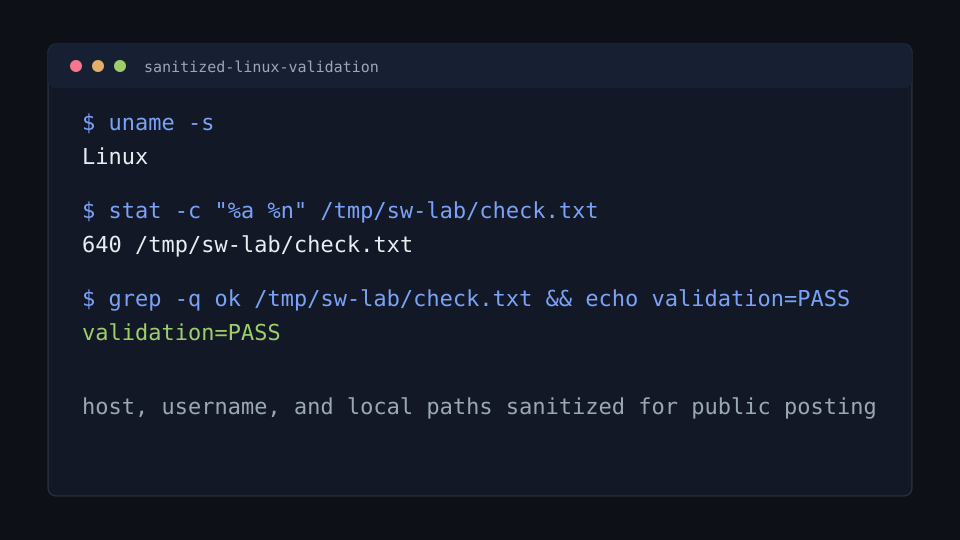

Problem
Reading command notes is not enough for support work. I need a place where I can repeatedly practice Linux basics, service checks, DNS troubleshooting, and break/fix thinking with a clean reset path.
Lab Infrastructure
A repeatable Docker lab for practicing Linux administration, networking, services, permissions, logs, and troubleshooting without risking a daily-use machine.
Reading command notes is not enough for support work. I need a place where I can repeatedly practice Linux basics, service checks, DNS troubleshooting, and break/fix thinking with a clean reset path.
The lab uses Docker Compose plus a PowerShell helper script so I can start, inspect, enter, reset, and tear down the environment from Windows.
.\sandbox.ps1 up
.\sandbox.ps1 status
.\sandbox.ps1 shell ubuntu
.\sandbox.ps1 shell net-client
.\sandbox.ps1 reset
.\sandbox.ps1 downdnf, rpm, and SELinux command familiarity.curl, dig, ping, traceroute, and packet tools.exam.lab zone for controlled DNS tests.This sanitized excerpt shows the validation style I use: run a small command, inspect the expected state, and prove the check passed. Host and user details are removed for public posting.
$ uname -s
Linux
$ stat -c "%a %n" /tmp/sw-lab/check.txt
640 /tmp/sw-lab/check.txt
$ grep -q ok /tmp/sw-lab/check.txt && echo validation=PASS
validation=PASS
stat instead of guessing from symptoms.validation=PASS.Add one completed break/fix note for each major topic area: users and groups, service state, DNS lookup, log review, and package repair.